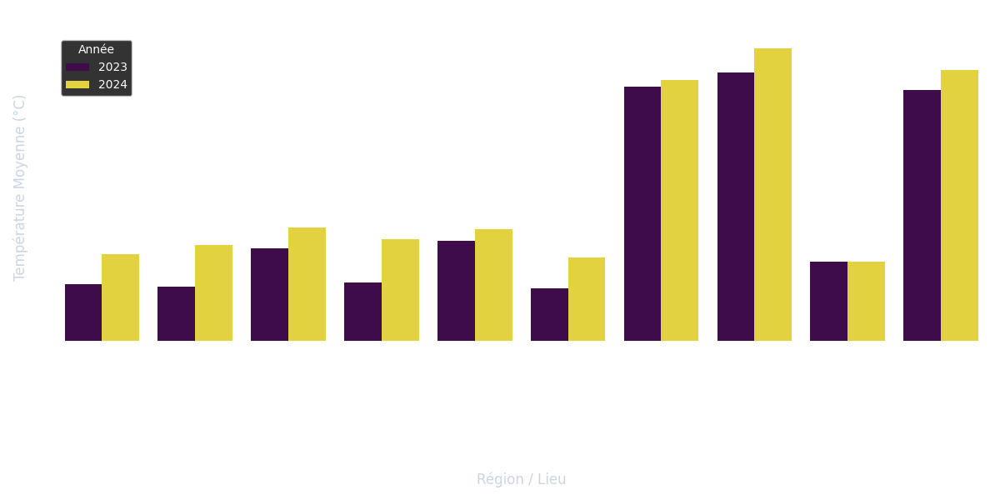
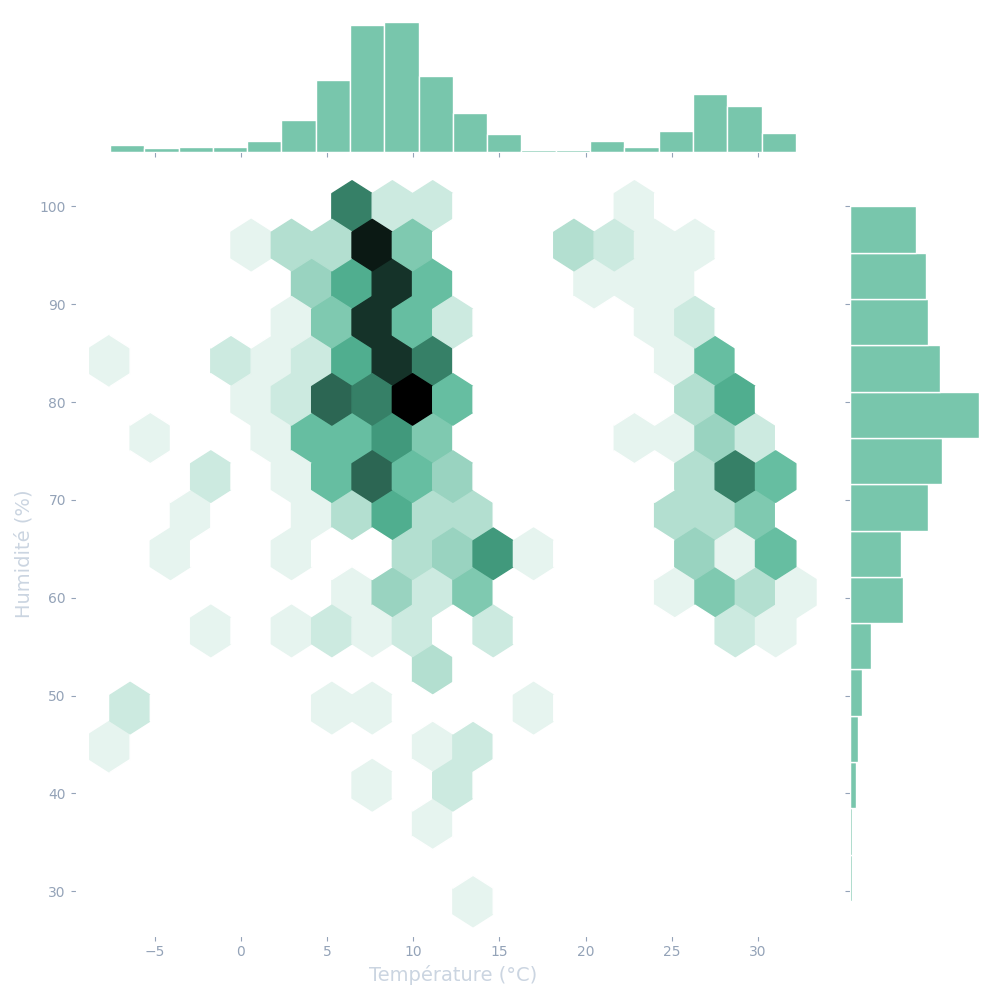
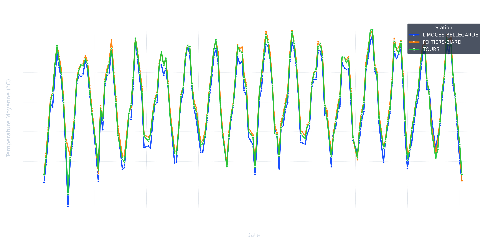

Analyse Météorologique
Visualisation en temps réel des données SYNOP (Température, Humidité, Vent).
Carte des Températures (Moyenne par Station)
Comparatif Régional : Température Moyenne

Relation Température / Humidité

Proximité IUT de Poitiers (< 101km) - Historique Complet
